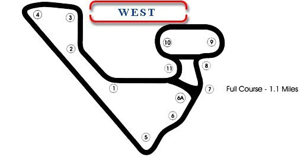
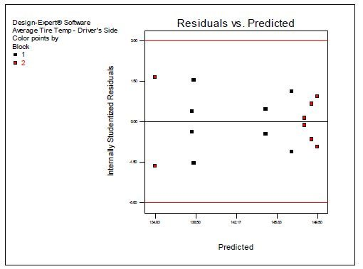
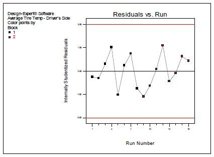

Controls & Data
Design of Experiments: Racetrack and Tire Setup
A designed experiment on Mustang racecars to link tire pressure, camber and contact area to hot tire pressure.
- Category
- Controls & Data
- Tools
- JMP · Design-Expert plots
- Context
- Arizona State University · team lead
- Period
- Aug–Dec 2023
Overview
I led a team in planning the experiment so that variability was minimized and the statistics were robust. The factors were suspension geometry, tire pressure and tire contact area, on BFGoodrich G-Force R1 competition radial tires.
Setup and method
- Statistical models for hot tire pressure on both the driver and passenger sides.
- Models predict the cold tire pressure and static camber needed to reach the manufacturer's hot pressure.
- Track direction on the Firebird East and West road-course layouts was tested as a factor.
- Residual analysis checked each model.
Results
Cold tire pressure is the main factor in hot tire pressure, with camber angle also significant. Track direction matters differently on each side of the car. The work ends with set-up recommendations based on post-race data, and the method can be reused for other tires.
Figures





Next project: Highway Decision-Making for Autonomous Vehicles with Deep RL →